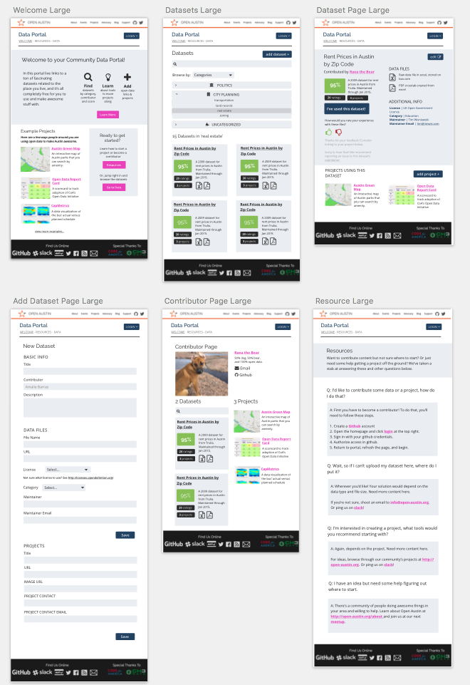

Problem
I volunteer with an organization called Open Austin who uses and advocates for open data in cities. The City of Austin has a data portal where its staff can publish and update its open datasets, but if a non-city person or organization wants to make a dataset available, there was no one-stop-shop for that data. Until the community data portal!

Skills and Tools Used
Research
I started by identifying the core purpose of the site which is to enable folks to learn about, discover, and post links to open data. This helped me to envision all the tasks that the user needed to complete, which informed my user stories. Once those were done, I created a new sitemap, and make sure all those tasks and user types mapped to a flow. Lastly, I looked at the analytics on the Open Austin community website to help me decide to design two screensizes, a mobile, and a tablet plus.

Design
Once I knew what needed to be on each page, I sketched out ideas for where it could be. After I iterated on those a few times, I turned those sketches into wireframes using the Sketch app. I created a few different style tiles to experiement with aesthetics, but I chose the one I did because it used color and humanistic type to evoke feelings of warmth & inclusion, but mixed blues and greys to avoid compromising user trust. One more round of feedback on wireframes before adding the style and turning them into pixel perfect mockups. 
Coding
I used an existing open source data portal called JKAN because it is backend-free, which makes it easy to maintain. It's also nice that it's Jekyll-based, which made it familiar to me. This was important because I only had two weeks to complete this project. I wrote new HTML, tweaked the existing CSS and Sass, and added a few JavaScript interactions. Once I had a complete prototype, I turned to the Open Austin community to help with the front-end development and deployment of the working app.

What I Learned
One challenge I had was sketching, which I hate because I am not the most skilled drawer of perfectly straight lines. I asked my instructors and peers for advice, and one person recommended I use a whiteboard so that I can get my ideas right before putting them to ink! This worked very well. Another challenge I had was working within an existing framework. I partially got around that by scoping the project down to prototype, instead of working app, but I also spent a lot of time reading documentation, github comments, and just learning the framework really well.